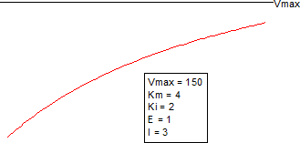

CompetitiveInhibition2-FitFunc
基質濃度を一次独立変数とする高親和性阻害剤の強結合競合阻害モデル

パラメータ数: 5
パラメータの名前: Vmax, Km, Ki, E, I
パラメータの意味: なし
下側境界: Vmax > 0, Km > 0, Ki > 0, E > 0
上側境界: なし
nlf_CompetitiveInhibition2(x,Vmax,Km,Ki,E,I)
CompInhibition2.fdf
Enzyme Kinetics 2

")
^2+4EK_{ap}} \right)")